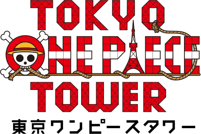

來東京冒險吧！
航海王史上首創！！
大型主題樂園！！
草帽一行人的地盤在東京的象徵‧東京鐵塔！
僅在此才可以體驗的遊樂設施、觀賞現場娛樂表演、享受美食的餐廳和購買限定商品的商店等‧‧‧
草帽一行人為您準備了很多的冒險，等待您的光臨！！
營業時間：10:00～22:00 （最後入場時間21:00
休假日：全年無休
官方網站： http://onepiecetower.tokyo/
特別合作：集英社
贊助：株式會社Seven Eleven Japan

當日票券：成年3,200日圓 兒童（4～12歳）1,600日圓
預售票：成年3,000日圓 兒童1,500日圓
日本國內的購票方式:
可在您附近的7-Eleven購買預售票。旅行團請向JTB代理店諮詢。
日本以外的海外購票方式:
網上購票系统目前正在筹备中，預計月下旬公布。詳情將於本官網隨時更新。
在園區營業時間內，持有預售票（指定日期）或各種兌換券時，必需在專用服務櫃檯換取護照。換取護照後，即可進入園區。
開設事務局
※窗口業務對應的時間：10:00～17:00（星期六、日和節假日除外）
info@onepiecetower.tokyo（諮詢時，請註明您的聯繫方式。）
地址：東京都港區芝公園4丁目2－8 東京鐵塔 Foot Town內
| 交通路線 | 下車站 / 出口 | 所需時間 |
| 都營大江戸線 | 赤羽橋站 / 赤羽橋出口 | 步行7分鐘 |
| 東京Metro日比谷線 | 神谷町站 / 1號出口 | 步行7分鐘 |
| 都營三田線 | 御成門站 / A1號出口 | 步行6分鐘 |
| 都營淺草線 | 大門站 / A6號出口 | 步行10分鐘 |
| JR山手線 | 濱松町站 / 北側出口 | 步行15分鐘 |
・駕車
從首都高速都心環狀線芝公園出口行駛7分鐘
停車場緊臨東京鐵塔，有地上和地下停車場。